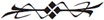

GODRIC’S HOLLOW, ST. JEROME’S CHURCH, 1981
RON, HERMIONE, DRACO, SCORPIUS, and ALBUS stand at the window, looking out. GINNY can’t look. She sits further back.
ALBUS notices his mum sitting apart. He walks over to her.
ALBUS: It’s going to be okay, you know that, Mum?
GINNY: I know it is. Or I hope I do. I just — don’t want to see him like that. The man I love shrouded in the man I hate.
ALBUS sits beside his mum.
ALBUS: I liked her, Mum, you know that? I really liked her. Delphi. And she was — Voldemort’s daughter?
GINNY: That’s what they’re good at, Albus — catching innocents in their web.
ALBUS: This is all my fault.
GINNY takes ALBUS in her arms.
GINNY: How funny. Your dad seems to think it’s all his. Strange pair that you are.
SCORPIUS: That’s her. That’s her. She’s seen him.
HERMIONE: Positions. Everybody. And remember, don’t come out until he’s got her in the light — we’ve one shot at this, we don’t want to mess it up.
They all move fast.
DRACO: Hermione Granger, I’m being bossed around by Hermione Granger. (She turns towards him. He smiles.) And I’m mildly enjoying it.
SCORPIUS: Dad . . .
They scatter. They hide behind two major doors.
HARRY/VOLDEMORT reenters the church. He walks a few paces and then he turns.
HARRY/VOLDEMORT: Whichever witch or wizard is following me, I assure you, you will regret it.
DELPHI emerges behind him. She is compelled to him. This is her father and this is the moment she’s waited for her entire life.
DELPHI: Lord Voldemort. It is me. I am following you.
HARRY/VOLDEMORT: I do not know you. Leave me.
She breathes deeply.
DELPHI: I am your daughter.
HARRY/VOLDEMORT: If you were my daughter, I’d know of you.
DELPHI looks at him imploringly.
DELPHI: I am from the future. The child of Bellatrix Lestrange and you. I was born in Malfoy Manor before the Battle of Hogwarts. A battle you are going to lose. I have come to save you.
HARRY/VOLDEMORT turns. She meets his eyes.
It was Rodolphus Lestrange, Bellatrix’s loyal husband, who on return from Azkaban told me who I was and revealed the prophecy he thought I was destined to fulfill. I am your daughter, sir.
HARRY/VOLDEMORT: I am familiar with Bellatrix and there are certain similarities in your face — though you haven’t inherited the best of her. But without proof . . .
DELPHI speaks intently in Parseltongue.
HARRY/VOLDEMORT laughs viciously.
That’s your proof?
DELPHI effortlessly rises into the air. HARRY/VOLDEMORT steps back — amazed.
DELPHI: I am the Augurey to your Dark Lord, and I am ready to give all that I have to serve you.
HARRY/VOLDEMORT (trying not to show his shock): You learnt — flight — from — me?
DELPHI: I have tried to follow the path you set.
HARRY/VOLDEMORT: I have never met a witch or a wizard who’s attempted to be my equal before.
DELPHI: Do not mistake — I would not claim to be worthy of you, Lord. But I have devoted my life to being a child you could be proud of.
HARRY/VOLDEMORT (interrupting): I see what you are, and I see what you could be. Daughter.
She looks at him, desperately moved.
DELPHI: Father?
HARRY/VOLDEMORT: Together, the power we could wield.
DELPHI: Father . . .
HARRY/VOLDEMORT: Come here, in the light, so I may examine what my blood made.
DELPHI: Your mission is a mistake. Attacking Harry Potter is a mistake. He will destroy you.
HARRY/VOLDEMORT’s hand turns into HARRY’s hand. He looks at it, astonished and dismayed, and then quickly pulls it inside his sleeve.
HARRY/VOLDEMORT: He is a baby.
DELPHI: He has his mother’s love. Your spell will rebound, destroying you and making him too powerful and you too weak. You will recover to spend the next seventeen years consumed in a battle with him — a battle you will lose.
HARRY/VOLDEMORT’s hair begins to sprout, he feels it, he attempts to cover it. He pulls his hood over his head.
HARRY/VOLDEMORT: Then I won’t attack him. You are right.
DELPHI: Father?
HARRY/VOLDEMORT shrinks down — he is now more HARRY than VOLDEMORT. He turns his back to DELPHI.
Father?
HARRY (trying desperately to still sound like Voldemort): Your plan is a good one. The fight is off. You have served me well, now come here into the light so I may examine you.
DELPHI sees a door slightly sway open and then be pulled shut. She frowns at it, thinking rapidly, her suspicion growing.
DELPHI: Father . . .
She tries to get a glimpse of his face again — there is almost a dance happening here.
You are not Lord Voldemort.
DELPHI unleashes a bolt from her hand. HARRY matches her.
Incendio!
HARRY: Incendio!
The bolts meet in a beautiful explosion in the middle of the room.
And with her other hand DELPHI sends bolts to both doors as they try to open them.
DELPHI: Potter. Colloportus!
HARRY looks at the doors, dismayed.
What? Thought your friends were going to join you, did you?
HERMIONE (from off): Harry . . . Harry . . .
GINNY (from off): She’s sealed the doors from your side.
HARRY: Fine. I’ll deal with you alone.
He moves to attack her again. But she is far stronger. HARRY’s wand ascends upwards towards her. He is disarmed. He is helpless.
How did you . . . ? What are you?
DELPHI: I’ve watched you for a long time, Harry Potter. I know you better than my father did.
HARRY: You think you’ve learnt my weaknesses?
DELPHI: I’ve studied to be worthy of him! Yes, even though he is the supreme wizard of all time, he will be proud of me. Expulso!
HARRY rolls away as the floor explodes behind him. He crawls frantically under a church pew, trying to work out how he can fight her.
Are you crawling away from me? Harry Potter. Hero of the wizarding world. Crawling away like a rat. Wingardium Leviosa!
The church pew ascends into the air.
The question is whether it’s worth my time to kill you — knowing that as soon as I stop my father your destruction will be assured. How to decide? Oh, I’m bored, I’ll kill you.
She sends the pew down hard upon him. It smashes as he rolls desperately away.
ALBUS emerges from a grate on the floor. Neither notice.
Avada —
ALBUS: Dad . . .
HARRY: Albus! No!
DELPHI: Two of you? Choices, choices. I think I’ll kill the boy first. Avada Kedavra!
She fires the Killing Curse at ALBUS — but HARRY throws him out of the way. The bolt smashes into the ground.
He fires a bolt back.
You think you’re stronger than me?
HARRY: No. I’m not.
They fire bolts mercilessly at each other as ALBUS rolls quickly away and slams a spell into one door and then another.
But we are.
ALBUS opens both doors with his wand.
ALBUS: Alohomora! Alohomora!
HARRY: I’ve never fought alone, you see. And I never will.
And HERMIONE, RON, GINNY, and DRACO emerge from the doors, and fire up their spells at DELPHI, who screams out in exasperation. This is titanic. But she can’t fight them all.
There are a series of bangs — and then, overwhelmed, DELPHI tumbles to the floor.
DELPHI: No . . . No . . .
HERMIONE: Brachiabindo!
She’s bound.
HARRY advances towards DELPHI. He doesn’t take his eyes off her. All the others stay back.
HARRY: Albus, are you okay?
ALBUS: Yes, Dad, I’m okay.
HARRY still doesn’t take his eyes off DELPHI. He’s still scared of her.
HARRY: Ginny, has he been injured? I need to know he’s safe . . .
GINNY: He insisted. He was the only one small enough to crawl through the grate. I tried to stop him.
HARRY: Just tell me he’s okay.
ALBUS: I’m fine, Dad. I promise.
HARRY keeps advancing towards DELPHI.
HARRY: A lot of people have tried to hurt me — but my son! You dare hurt my son!
DELPHI: I only wanted to know my father.
These words take HARRY by surprise.
HARRY: You can’t remake your life. You’ll always be an orphan. That never leaves you.
DELPHI: Just let me — see him.
HARRY: I can’t and I won’t.
DELPHI (truly pitiful): Then kill me.
HARRY thinks a moment.
HARRY: I can’t do that either.
ALBUS: What? Dad? She’s dangerous.
HARRY: No, Albus . . .
ALBUS: But she’s a murderer — I’ve seen her murder —
HARRY turns and looks at his son and then at GINNY.
HARRY: Yes. Albus, she’s a murderer, and we’re not.
HERMIONE: We have to be better than them.
RON: Yeah, it’s annoying but it’s what we learnt.
DELPHI: Take my mind. Take my memory. Make me forget who I am.
RON: No. We’ll take you back to our time.
HERMIONE: And you’ll go to Azkaban. Same as your mother.
DRACO: Where you’ll rot.
HARRY hears a noise. A hissing noise.
And then there is a noise like death — a noise like nothing else we’ve heard before.
Haaarry Pottttter . . .
SCORPIUS: What’s that?
HARRY: No. No. Not yet.
ALBUS: What?
RON: Voldemort.
DELPHI: Father?
HERMIONE: Now? Here?
DELPHI: Father!
DRACO: Silencio! (DELPHI is gagged.) Wingardium Leviosa! (She is sent upwards and away.)
HARRY: He’s coming. He’s coming right now.
VOLDEMORT comes through the back of the stage, and across it, and walks down into the auditorium. He brings death with him. And everyone knows it.